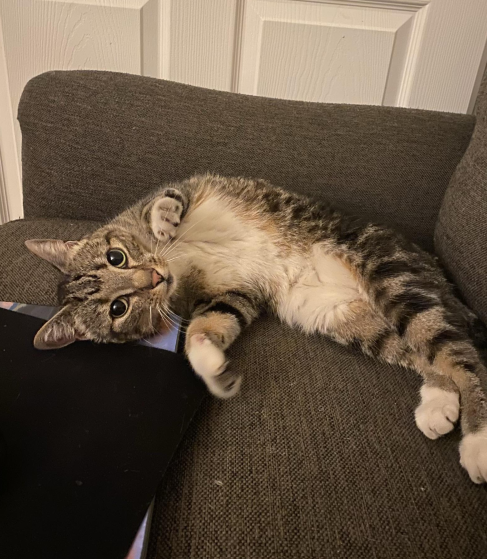
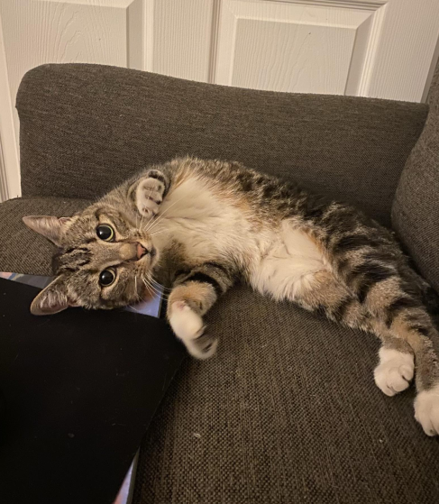
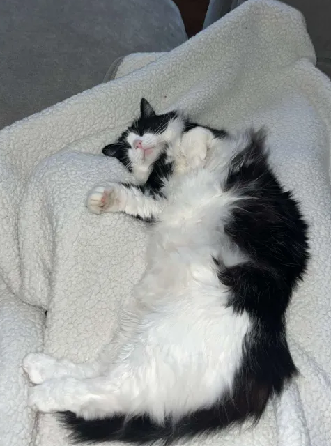
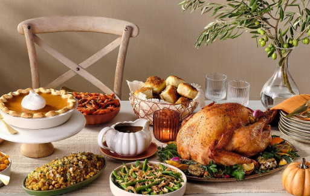
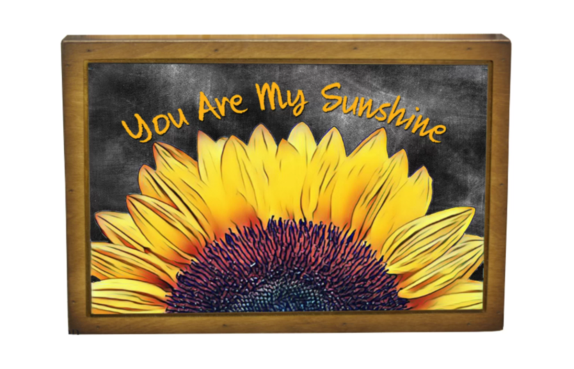

January 21, 2025
Just took my cat home after a starbies pup/kitty cup run!!!! #CatMom
#CatMom
Location: Tuscaloosa, AL
Cat Mom, Lover of all furry creatures! | ♎ Libra | Support Wheelchairs For Cats Charity! | HR Manager of the Year at Crimson Credit Union
Check out my Cat's profile: @Marigold_the_cat !
January 21, 2025
Just took my cat home after a starbies pup/kitty cup run!!!! #CatMom
December 20, 2024
Saw my boss's cat at the annual Company Christmas Party! I love Bubba so much! #CuteCat
November 21, 2024
Made a thanksgiving meal for the family..... Nobody showed up. #Ungrateful #Lonely
October 28, 2024
Today would have been my beloved father's 72cd birthday. Unfortunately he passed 4 years ago at the age of 68. Life isn't the same without you.💔
